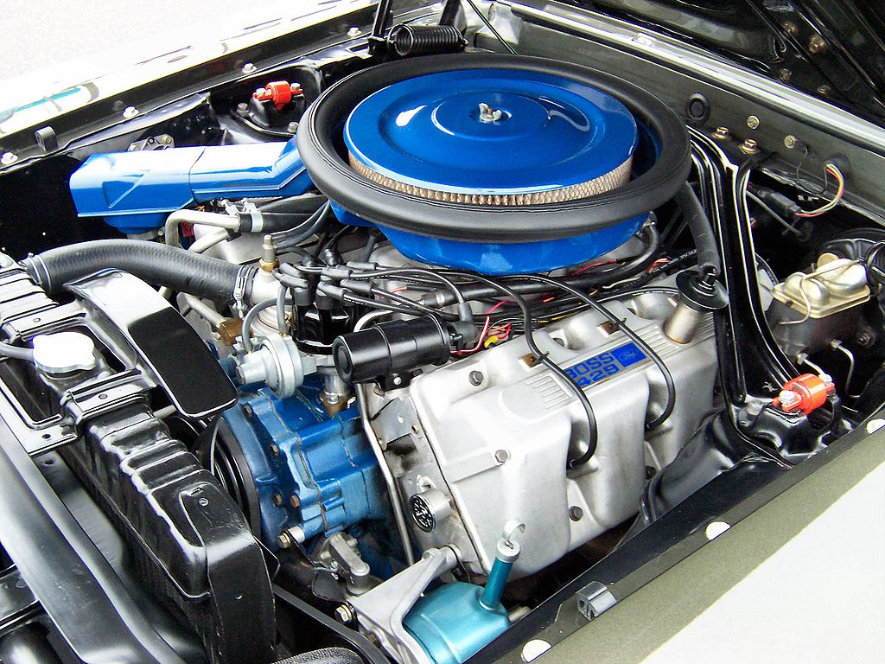

The Boss 429 Mustang was named after its engine, the 429
cubic inch V8, which was developed specifically for racing.
The engine was incredibly powerful, producing 375 horsepower,
although some versions were rumored to produce over 500 horsepower.
To fit the massive engine into the Mustang, the engine bay had to be
widened and modified, which made the Boss 429 Mustang one of the rarest
and most sought after Mustangs ever produced.

Only 1,358 Boss 429 Mustangs were produced between 1969 and 1970, making them extremely rare and valuable. Today, they are highly prized by collectors and enthusiasts, and are considered to be one of the most iconic American muscle cars ever produced.